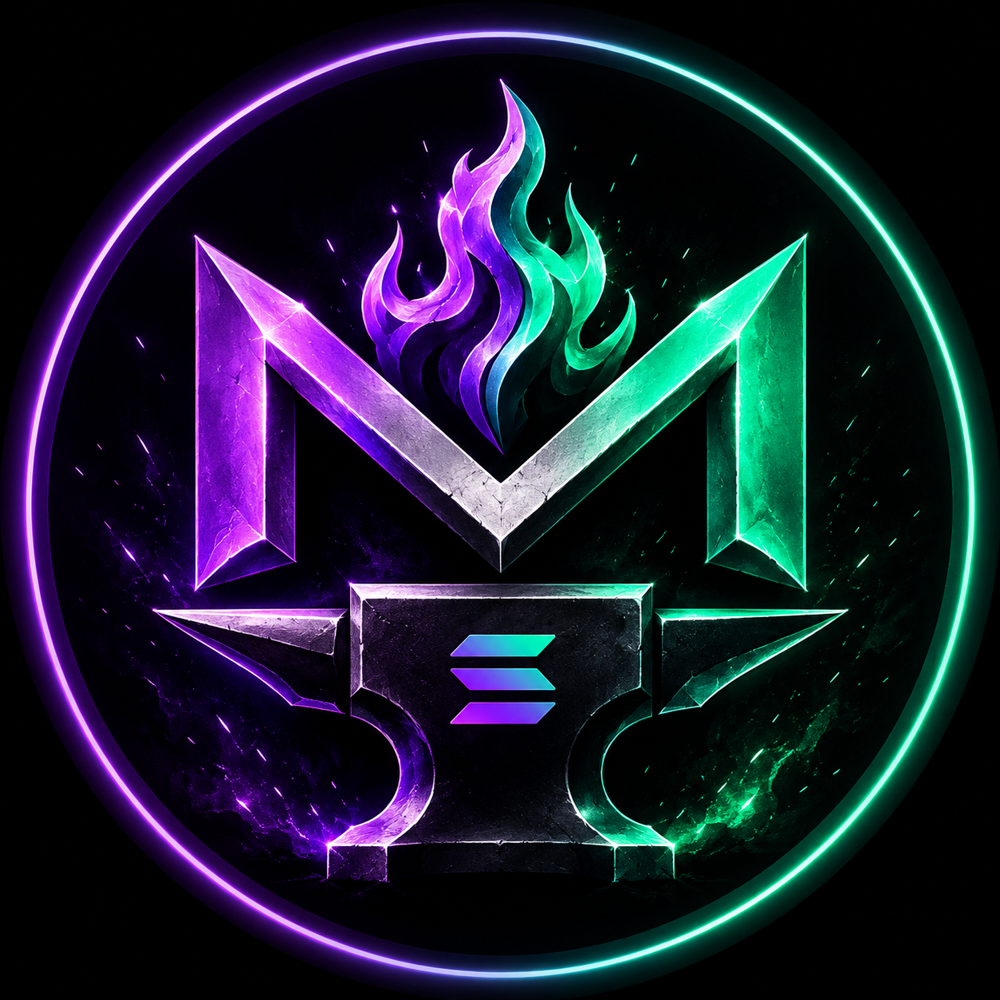
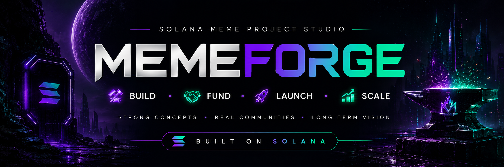

Identity over noise.
Distinct characters, worlds and visual systems that give a community something recognizable to rally around.

MEMEFORGEJoin Telegram ↗
We turn raw ideas into distinctive identities, real communities and executable meme projects — built for the Solana ecosystem.
● Building in public • SolanaA ticker can trend for a day. A character can become a culture. We are building around the second idea.
Distinct characters, worlds and visual systems that give a community something recognizable to rally around.
People should feel like participants in the world, not an audience waiting for the next announcement.
Ideas only matter when they become consistent content, experiences, distribution and community systems.
Don't rush the launch. Build the reason people will care first.
“The goal isn't to makeMEMEFORGE ⚒
another meme.
It's to make one
people remember.”
We're early. No fake milestones, no manufactured hype. We're building the studio, the network and the ideas in public. If you're interested in Solana, memes, characters, community or execution — come watch the build.